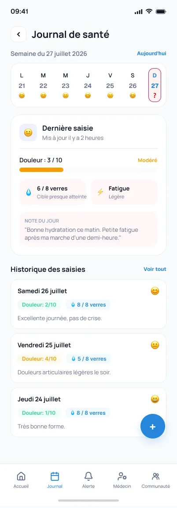
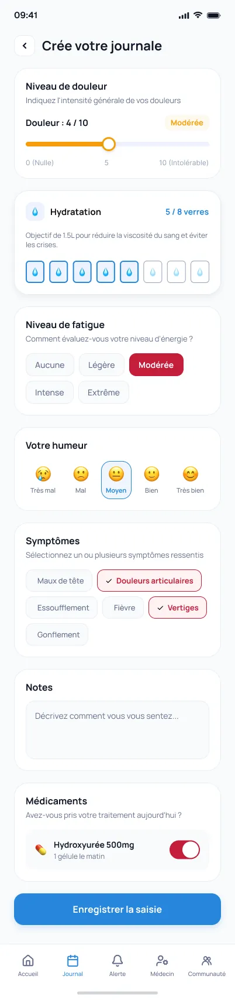
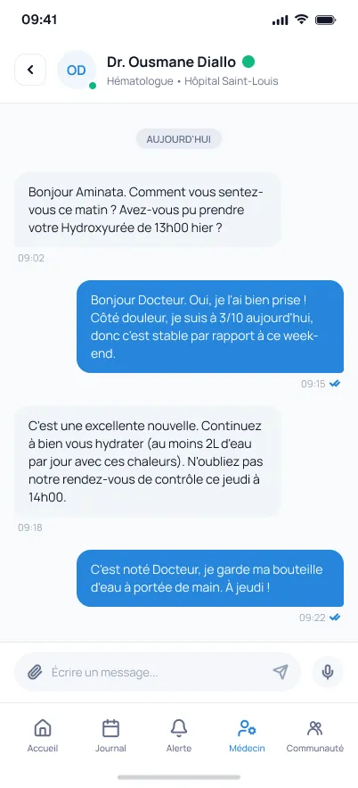
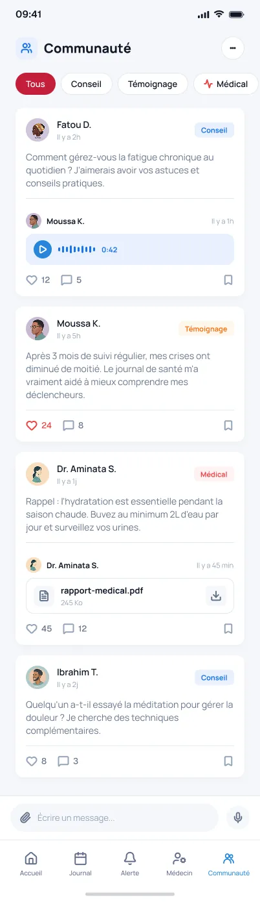

Des contenus fiables
Articles validés sur la nutrition, l'hydratation, le sport et la vie avec la maladie.
L'application DrepaForce
Un parcours pensé pour le quotidien du patient : rester informé, suivre son état jour après jour, et trouver du soutien auprès de son médecin et de la communauté.
Un accompagnement accessible, conçu pour les réalités de l'Afrique de l'Ouest.
Les fonctionnalités
Des outils simples pour mieux comprendre son état, garder le lien avec les soignants et trouver les informations utiles.
Articles validés sur la nutrition, l'hydratation, le sport et la vie avec la maladie.
Douleur, fatigue, fièvre, hydratation et historique réunis dans un même espace.
Messagerie sécurisée avec le médecin et communauté d'entraide modérée.
Aperçu de l'application
Une interface visuelle pour suivre sa santé, trouver des conseils et garder le lien avec son équipe de soins.






Pensée pour le terrain
Journal de santé, guide d'urgence, fiches éducatives et alertes restent accessibles sans connexion. Les données se synchronisent automatiquement dès le retour du réseau.
Aucune donnée de santé n'est vendue. Le modèle repose sur des partenariats institutionnels et des abonnements pour les structures de soins — jamais sur les familles.
Interface simple et visuelle. Alertes par SMS et menu USSD pour les téléphones basiques. Disponible en français et en anglais.
Pour qui, et pour quoi faire
Personnes vivant avec la drépanocytose, à tout âge.
Parent d'un enfant malade ou proche qui accompagne un patient.
Médecins, infirmières et spécialistes de la drépanocytose.